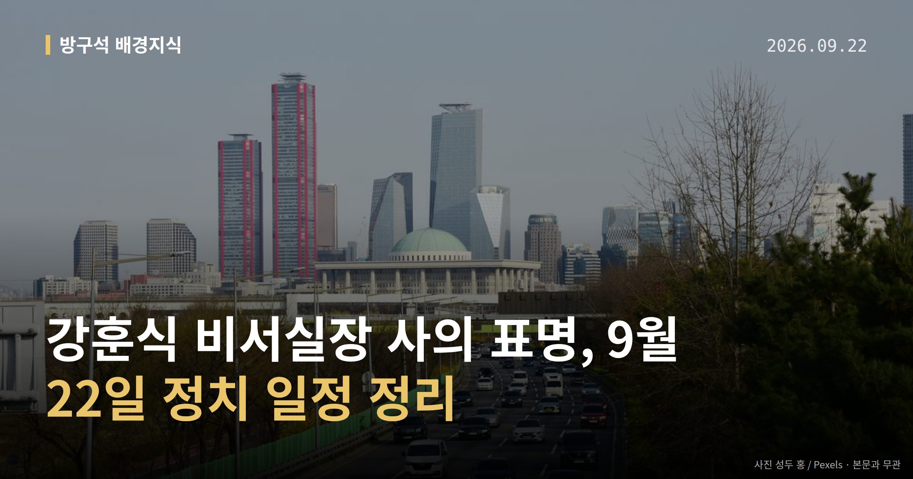

이 글은 2026년 9월 22일 기준으로 정리한 내용입니다.
9월 21일 강훈식 대통령비서실장이 사의를 표명했습니다. 이재명 대통령이 미국 순방 중이어서, 사의를 받아들일지 여부는 순방 이후로 넘어간 상태입니다.
그 사이 국민의힘은 22일 국회 앞 행사를, 더불어민주당은 인천 지역 일정을 각각 예고했습니다. 오늘 글에서는 이 흐름을 차례대로 정리해 보겠습니다.
사의 표명은 "물러나겠다"는 뜻을 밝히는 단계입니다. 임명권자가 이를 수리해야 사퇴가 확정되기 때문에, 지금은 아직 직이 정리된 상태가 아닙니다.
대통령이 순방 중인 만큼 강훈식 비서실장 사의의 수리 여부는 귀국 이후 결정될 것으로 전해졌습니다. 후임 비서실장과 정책실장 인선 방향도 함께 거론되고 있습니다.
이재명 대통령은 "국정 책임자로서 무거운 책임감, 낮은 자세로 국정 세밀히 다듬을 것"이라고 말한 것으로 소개됐습니다. 다만 이 발언의 정확한 시점과 맥락은 자료에서 확인되지 않았습니다.
장동혁 국민의힘 대표는 페이스북에 "정말로 책임을 져야 할 사람들은 청와대를 좌지우지한다는 '경기·성남 라인' 아닌가"라고 적었습니다. 이어 "내각과 청와대를 전면 쇄신해야 한다"며 "'종합적인 책임'을 질 사람은 바로 이재명 대통령"이라고 했습니다.
정점식 원내대표는 기자회견에서 "강 비서실장은 이번 인사 참사에 대한 책임을 지고 사퇴했어야 마땅하다"며 한성숙 국무총리의 사퇴도 요구했습니다. 또 김현지 청와대 제1부속실장과 정진상 전 민주당 정무조정실장을 국정감사(국회가 정부 기관의 한 해 업무를 따져 묻는 절차) 증인으로 불러야 한다고 촉구했습니다.
박성훈 수석대변인은 논평에서 "고작 비서실장 한 사람에게 책임을 떠넘기는 것이 쇄신인가"라고 물었습니다. 이상은 모두 국민의힘 측 주장이며, 강훈식 비서실장 사의에 대한 더불어민주당 등 여당의 직접 반응은 이번 자료에서 확인되지 않았습니다.
| 시각 | 일정 | 장소 |
|---|---|---|
| 오전 8시 | 국무회의(총리실 주재) | 정부세종청사 |
| 오전 10시 30분 | 국민의힘 '이재명 정권 실정 대국민 보고대회' | 국회 본관 앞 중앙계단 |
| 시각 미표기 | 민주당 예산정책협의회·모래내시장 방문 | 인천 남동구 |
| 시각 미표기 | 김건희 '매관매직' 사건 항소심 선고 | 자료에 미표기 |
항소심 선고는 뉴시스 기사 목록에 표기된 내용으로, 세부 사항은 자료에 담겨 있지 않습니다.
국회의원 발의 법률안 116건. 가장 최근은 조세특례제한법 일부개정법률안(정태호의원 등 10인).
본회의 처리 법률안 71건 — 철회 1건 · 원안가결 40건 · 수정가결 30건
이번 주 등록된 선거 여론조사 8건
열린국회정보·중앙선거여론조사심의위원회 자료를 직접 셌습니다. 여론조사의 자세한 사항은 중앙선거여론조사심의위원회 홈페이지를 참조하세요.
여러분은 이번처럼 고위직 인사가 바뀔 때, 어떤 기준으로 그 변화를 판단하시나요?
댓글로 알려 주시면 다음 글에 반영하겠습니다.